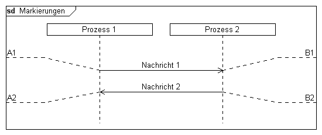

Syntax
Parameter
Syntax
Parameter
 instanceid
text
orientation (optional)
instanceid
text
orientation (optional)
| Wert | Bedeutung |
|---|---|
| l | Die Markierung wird an der linken Seite des Diagramms dargestellt. |
| r | Die Markierung wird an der rechten Seite des Diagramms dargestellt. |
| t | Die Markierung wird oben herum geführt. |
| b | Die Markierung wird unten herum geführt. |
Der Standardwert für den Parameter ist "lt".
Beispiel
|
DiagramName: Markierungen DiagramStyle: uml PageSize: 550,auto PageMargins: 10,10,10,10 Left: 50 Right: 50 process: p1, Prozess 1 process: p2, Prozess 2 ; msg: p1, p2, Nachricht 1 mark: p1, A1 mark: p2, B1, r; msg: p2, p1, Nachricht 2 mark: p1, A2, lb mark: p2, B2, rb; |
 |
Siehe auch